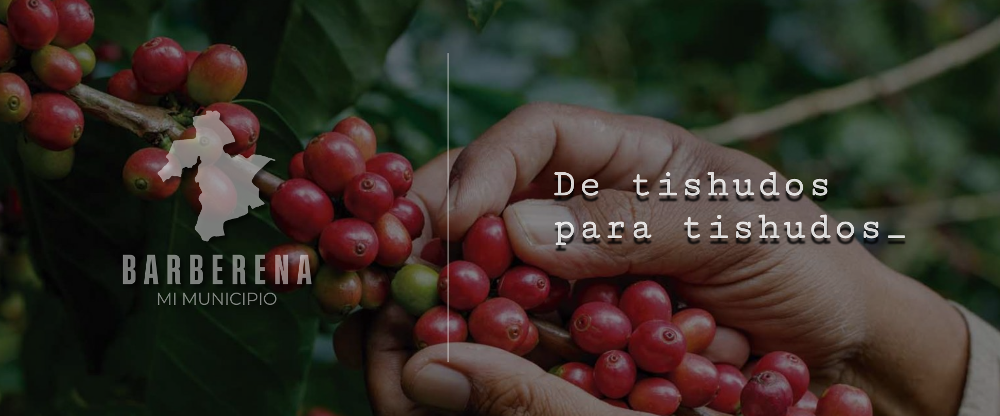

En la época colonial, el territorio era una doctrina de los frailes mercedarios y se conocía como Corral de Piedra. Tras la independencia de Centroamérica, quedó bajo el Circuito de Cuajiniquilapa para la impartición de justicia.
El 20 de diciembre de 1879, por acuerdo gubernativo, se crea el municipio agrupando Corral de Piedra, El Pino, Buena Vista, Cerro Redondo, La Vega, Los Tarros, La Pastoría, San Juan Utapa, El Zapote, Tianzul y Pueblo Nuevo. El General Justo Rufino Barrios cambia el nombre a "San José de Barberena", que con el tiempo se acorta a Barberena.
El 8 de marzo de 1913 un terremoto destruyó casi por completo Cuilapa, la cabecera de Santa Rosa. Durante siete años, Barberena asumió el rol de cabecera departamental mientras Cuilapa era reconstruida.
Se construye uno de los solo cuatro templos de este tipo que existen en Guatemala (junto a Chiquimula, Jalapa y Quetzaltenango), motivo de orgullo local hasta hoy.
Con más de 47,000 habitantes (censo 2018), Barberena es uno de los 14 municipios de Santa Rosa. Ubicado sobre la carretera Interamericana CA-1, a 54 km de la capital, su economía gira principalmente alrededor del café y la agricultura.
¿De dónde viene "tishudo"? Según el Diccionario de guatemaltequismos de Lisandro Sandoval, "tishudo/a" se le decía a quien cojeaba al andar. El apodo se le atribuye a los habitantes de Corral de Piedra y luego Barberena por las crianzas de cerdos que existieron en la zona, que generaban basureros donde se reproducían niguas causantes de esa cojera característica. De ahí, con orgullo y sin pena, nuestro lema: "De tishudos para tishudos."
Miles de barberenenses ya participan. Comparte lo que sabes, opina y ayuda a construir una comunidad más informada.